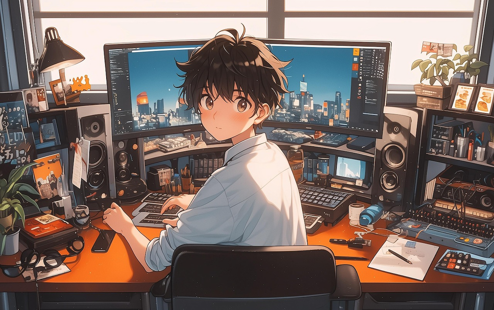

Estudia mejor, con calma y con buena música
Organiza tus sesiones de estudio de manera eficiente y efectiva.
Consejos de estudio
- Establece una zona de estudio dedicada y ordenada.
- Utiliza técnicas de estudio efectivas, como el método Pomodoro.
- Haz resúmenes y esquemas para repasar los conceptos.
- Escucha música relajante mientras estudias.
Música para estudiar
Audio: purrplecat - Lost and Found
Autor: BoDleasons
Licencia: Licencia de contenido de Pixabay
Procedencia: https://pixabay.com/es/music/late-lofi-chill-smooth-chill-lofi-for-vlogs-and-background-music-159456/
Video para estudiar
Mis asignaturas
- Programación
- Base de Datos
- Lenguajes de Marcas
- Sistemas Informáticos

Imagen: Chico estudiando en un escritorio
Autor: qiaominxu_橋茗旭
Licencia: Licencia de contenido de Pixabay
Procedencia: https://pixabay.com/es/illustrations/ai-generado-chico-escritorio-8581189/